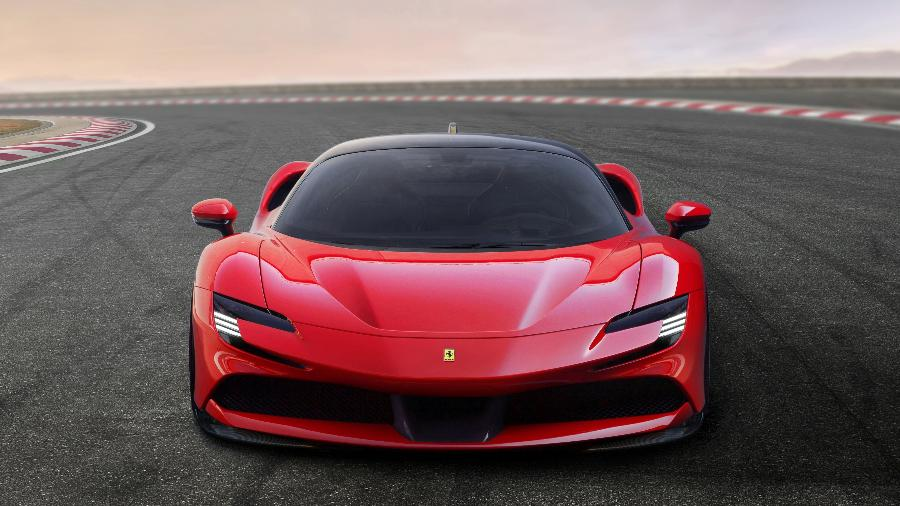
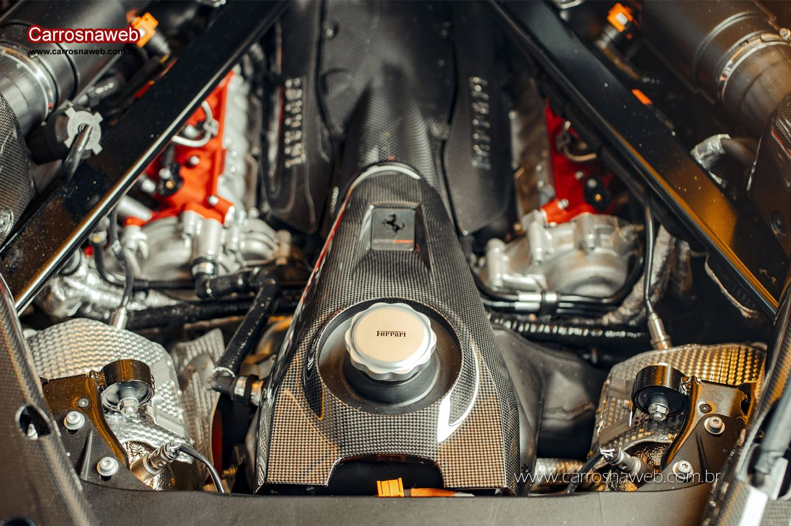
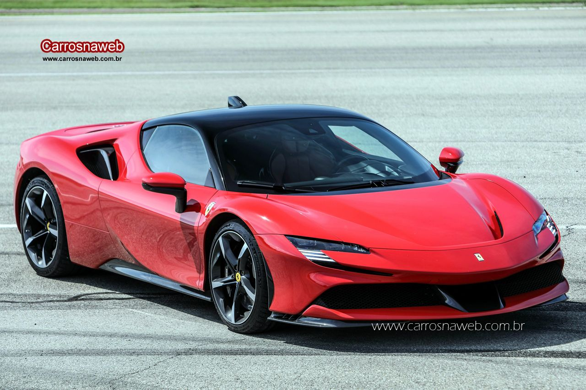
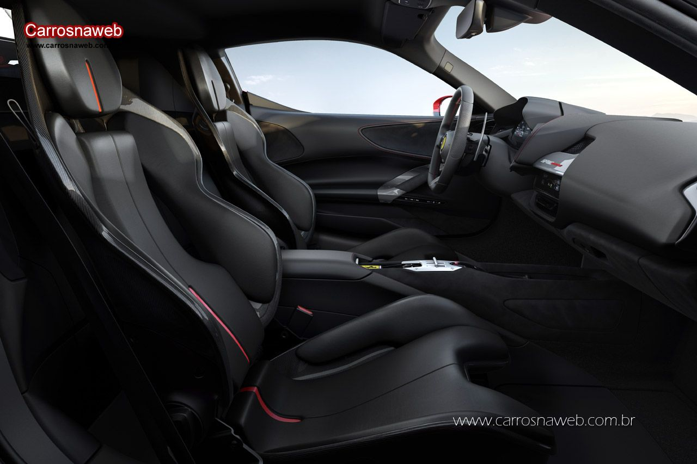
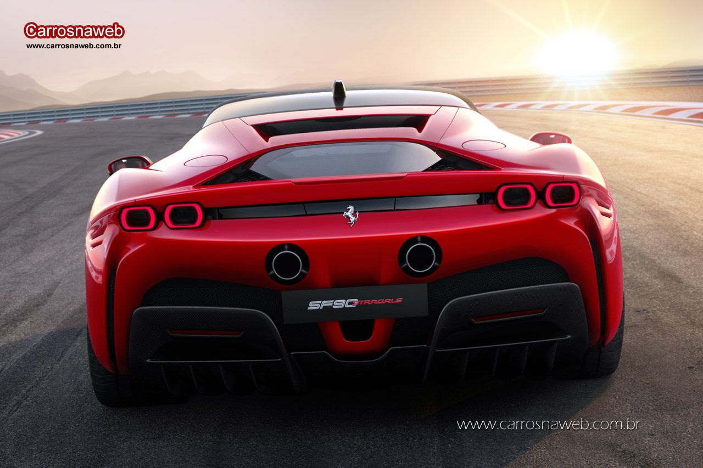

SF-90 STRADALE: O NOVO SUPER CARRO DE SÉRIE
O nome do carro resume o verdadeiro significado de tudo o que foi alcançado em termos
de desempenho. A referência ao 90º aniversário da fundação da Scuderia Ferrari sublinha a
forte ligação que sempre existiu entre os carros de pista e de estrada da Ferrari.
Um encapsulamento brilhante das tecnologias mais avançadas desenvolvidas em Maranello, o
SF90 Stradale é também a demonstração perfeita de como a Ferrari transfere imediatamente o
conhecimento e as habilidades que adquire em competição para os seus carros de produção.
MUITO ALÉM DE PERFORMANCE
A Stradale vai muito além de performance, sendo o primeiro carro de série da Ferrari
a apresentar arquitetura PHEV (Plug-in Hybrid Electric Vehicle).
Essa tecnologia traz o motor
de combustão interna integrado à três motores elétricos, dois dos quais são
independentes e localizados no eixo dianteiro, com o terceiro na parte traseira
entre o motor e o câmbio.
Tudo isso se traduz em números: Seu motor V8 juntamente com os motores elétricos
entregam incríveis 1000CV de potência à 7500RPM!
Tudo isso faz com que essa máquina
atinja os 100km/h em apenas 2.5 segundos e em menos de 30 metros!
Além disso, é capaz de atingir 340km/h de velocidade máxima com sua relação peso-potência de 1.57kg/cv.
Seu câmbio "importado" da Fómula 1 conta com 8 marchas e embreagem dupla.
Além do cambio, seus freios também vêm da F1, o que garante ainda mais segurança ao piloto.
AERODINÂMICA NUNCA VISTA EM UM CARRO DE RUA
A SF-90 conta com um sistema batizado de SMART COOLING FLOW MANAGEMENT que resfria os freios, baterias, motores elétricos e motor à combustão, câmbio e sua turbina turbo-charger.
UMA ABORDAGEM FUTURISTA EM SEU INTERIOR
Seus designers decidiram ter uma abordagem futurista em seu interior, trazendo um conceito forte, insipirado em cockpits de caças aéreos, dando ênfase em seus instrumentos, o que fortalece mais ainda a relação simbiótica entre máquina e piloto!
POTÊNCIA, TECNOLOGIA, DESIGN E LUXO
Pilotar uma Ferrari sempre será uma experiência única, ela despertará todos os seus sentidos!
Experimente e apaixone-se! Stradale SF-90, um sonho sobre rodas!